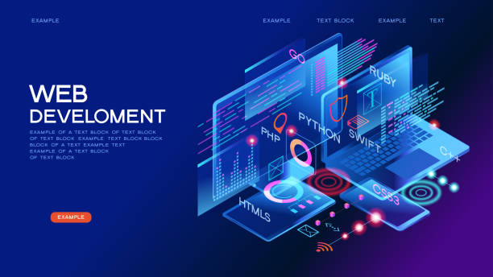
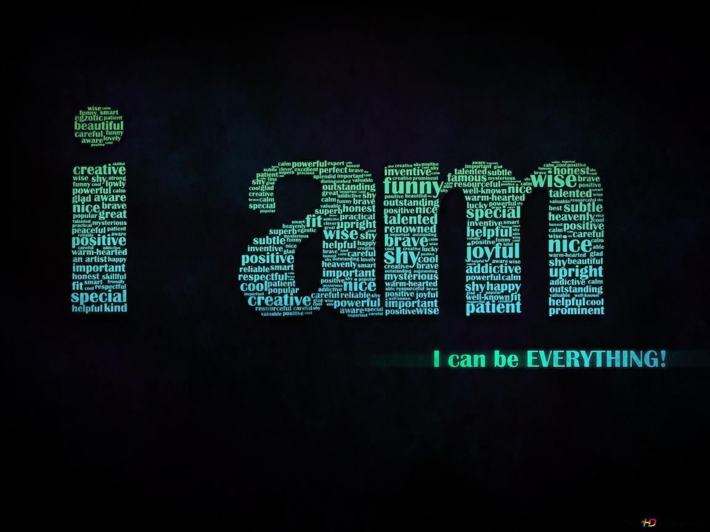

Image Gallery




Web Developer • Designer • Software Engineer
I am a web developer passionate about creating modern, visually appealing, and user-friendly websites using HTML, CSS, and JavaScript.
Java + MySQL system with GUI for hotels including booking, room management, and reports.
HTML, CSS, JS, PHP & MySQL with admin panel, cart, orders, and payment integration.
HTML, CSS, JS and PHP.
Step-by-step process using HTML, CSS & JS.
What new developers should focus on.
Powerful ecosystem & enterprise demand.
Email: marktimothy19861986@gmail.com